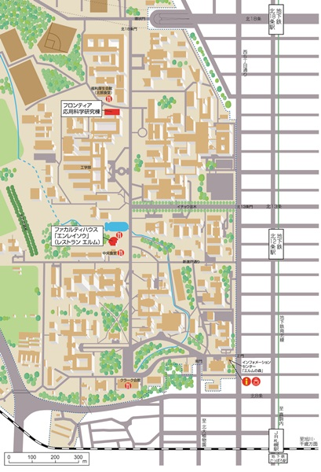

The 22nd Symposium on Atmospheric Chemistry
in Sapporo, Hokkaido
Oct. 12(Wed.) - 14(Fri.), 2016
会場・アクセス
北海道大学工学部フロンティア応用科学研究棟
(北海道札幌市)
口頭発表：2F レクチャーホール（鈴木章ホール）
ポスター発表：2F ホワイエ
※詳細なアクセスはこちら。
懇親会会場：
ファカルティハウス 「エンレイソウ」（レストラン エルム）
(北海道大学内)
※懇親会会場は講演会場より徒歩5分程度です
